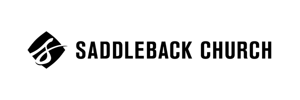

ACLJ
- Prototyped with Internet of Thing (IoT) devices such as Raspberry Pi and Particle
to develop a device that tracked air quality
- Coded in Python to successfully complete an application that collected data from our devices and
uploaded it to a database using Particle's API
- My code was used by the Swiss Federal Institute of Technology Zurich, a top level engineering school
,to help with similar research
Princeton
- Prototyped with Internet of Thing (IoT) devices such as Raspberry Pi and Particle
to develop a device that tracked air quality
- Coded in Python to successfully complete an application that collected data from our devices and
uploaded it to a database using Particle's API
- My code was used by the Swiss Federal Institute of Technology Zurich, a top level engineering school
,to help with similar research
Saddleback

- Learned to code in HTML and CSS in order to learn the fundamentals of website design
- Created a website from scratch that showcased approximately 50 internsincluding their personal
information and job responsibilities while on the Saddleback team
- Was able to geta professional looking website live in just over 3 months